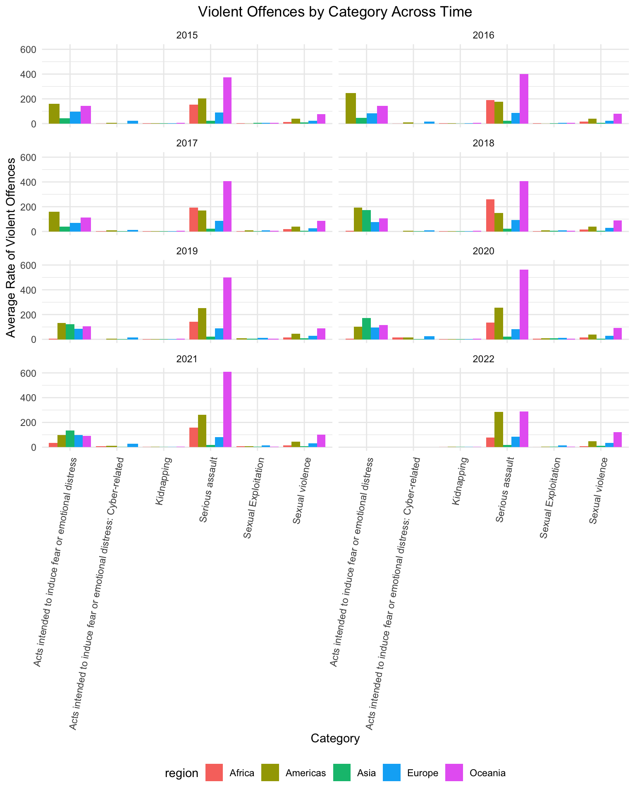

EDA
Homicide Victims
Global Trends of Homicide Victims
homicide_visual_df |>
group_by(region, sex, year) |>
summarize(avg_homicide_rate = mean(homicide_rate)) |>
ggplot(aes(y = avg_homicide_rate, x = year, color = sex)) +
geom_smooth(se = FALSE) +
facet_grid(~region) +
theme(axis.text.x = element_text(angle = 45, hjust = 1)) +
labs(x = "Year",
y = "Average Rate of Homicide Victims",
title = "Homicide Victims Worldwide")
The Americas and Asia have significantly higher average homicide rate across years for male victims compared to the other regions. The average homicide rate between genders are not significant for Africa, Asia and Oceania.
Comparing the Americas and Asia
homicide_visual_df |>
filter(region %in% c("Asia", "Americas")) |>
group_by(category, region) |>
summarize(avg_homicide_rate = mean(homicide_rate)) |>
ggplot(aes(y = avg_homicide_rate, x = region,
fill = reorder(category, avg_homicide_rate))) +
geom_col(position = "dodge", bin = 3.0) +
theme(axis.text.x = element_text(angle = 45, hjust = 1)) +
labs(x = "Region",
y = "Average Rate of Homicide Victims",
title = "Homicide in America & Asia",
fill = "Category")Further exploring homicide in Americas and Asia, the Americas have higher homicide rates for most categories compared to Asia. Homicides of perpetrator to victim relationship unknown has the largest homicide rate. Homicides of unknown types is next category with the highest homicide rate in the Americas.
On the other hand, Asia has a significantly high homicide rate in socio-political homicide compared to the other categories,suggesting high casualties as a result of socio-political activities for countries in Asia. The other categories have a homicide rate lesser than 5 percent.
Breakdown of Homicide
homicide_visual_df |>
group_by(category, year) |>
summarize(avg_homicide_rate = mean(homicide_rate)) |>
ggplot(aes(y = avg_homicide_rate, x = as.factor(year), fill =
reorder(category, avg_homicide_rate))) +
geom_bar(stat = "identity") +
labs(title = "Distribution of Homicide by Category",
x = "Year",
y = "Total Rate of Homicide Victims",
fill = "Category")
Homicides of unknown types and perpetrator to victim relationship unknown are two highest proportions in the total homicide rate, indicating most homicides are committed by strangers or have no connection with the victims. Also, we can observe that homicide rates as a result of organized criminal groups or gangs and interpersonal homicide are the next significant proportions in homicide. The total homicide rate increases sharply from 2015 to 2017 compared to the other years possibly due to socioeconomic factors, such as economic instability.
Violence: Offences & Victims
Global Trends of Violent Offences
violence_visual_df |>
filter(indicator == "Violent offences") |>
group_by(category, year, region) |>
summarise(grp_mean_rate = mean(violence_rate)) |>
ggplot(aes(x = year, y = grp_mean_rate, color = category)) +
geom_line() +
facet_wrap(~region, ncol=2) +
theme(axis.text.x = element_text(angle = 45, hjust = 1),
legend.position = "bottom") +
labs(title = "Violent Offences Worldwide",
x = "Year",
y = "Average Rate of Violent Offences") +
guides(color = guide_legend(nrow = 3))
Africa’s most common violent offence category was serious assault, with the Americas trading off between serious assault and acts intended to induce fear or emotional distress. From 2015-2021 Oceania clearly has the highest rates of serious assault, but it drops severely in 2022.
Exploring Violent Offences
violence_visual_df |>
filter(indicator == "Violent offences") |>
group_by(category, year, region) |>
summarise(avg_violence_rate = mean(violence_rate)) |>
mutate(category = fct_reorder(category, avg_violence_rate)) |>
ggplot(aes(x = category, y = avg_violence_rate, fill = region)) +
geom_bar(stat = "identity", position = "dodge") +
facet_wrap(~year, ncol=2) +
theme(axis.text.x = element_text(angle = 80, hjust = 1),
legend.position = "bottom") +
labs(x = "Category",
y = "Average Rate of Violent Offences",
title = "Violent Offences by Category Across Time") 
The plot above shows similar trends to the line graph above, but allows us to compare more closely the rates for categories that are less visible such as sexual violence, where Oceania appears to have the highest rates of as well. We see more clearly that with Oceania’s drop in serious assaults in 2022, Americas and Oceania have similar trends.
Victims of Sexual Violence
Even in 2024, it is still ever-important to discuss sexual violence crimes. Violence against women is a public health issue and any type of sexual violence is a violation of human rights, harming physical, mental, sexual, and reproductive health. We are interested in seeing more specifically trends in sexual violence across the years for regions with sufficient data.
violence_visual_df |>
filter(indicator == "Victims of sexual violence",
region != "Africa") |>
group_by(region, sex, year) |>
summarize(avg_victim_rate = mean(violence_rate)) |>
ggplot(aes(y = avg_victim_rate, x = year, color = sex)) +
geom_smooth(se = FALSE) +
facet_grid(~region) +
theme(axis.text.x = element_text(angle = 45, hjust = 1)) +
labs(x = "Year",
y = "Average Rate of Sexual Violence Victims",
title = "Sexual Violence Worldwide")
When exploring victim rate of sexual violence, we can see that in overall, there is a higher average victim rate for females; the largest disparity in victim rate between the genders can be observed in Oceania, where the rate for females have been sharply increasing over the years. The victim rate for the Americas and Europe has also been increasing, but steadily compared to Oceania over the years, while Asia has experienced a decline from 2019. Africa was not included because the data was either very small or missing for many countries in the region.
Investigating Sexual Violence
violence_visual_df |>
filter(indicator == "Victims of sexual violence",
region != "Africa") |>
group_by(category, sex, region) |>
summarize(avg_victim_rate = mean(violence_rate)) |>
ggplot(aes(y = avg_victim_rate, x = region,
fill = reorder(category, avg_victim_rate))) +
geom_col(position = "dodge") +
theme(axis.text.x = element_text(angle = 45, hjust = 1)) +
labs(x = "Region",
y = "Average Rate of Sexual Violence Victims",
fill = "Category",
title = "Sexual Violence By Category Across Region")
Further exploring victims of sexual violence, except for perpetrator unknown to the victim, Oceania has a higher average victim rate of sexual violence for the all other categories compared to the other regions. Oceania, Europe and Americas have relationship of perpetrator is not known as the highest category for victim rate. Similar to homicide, the perpetrators are strangers or have no connection with the victims for most sexual violence. On the other hand, Asia has a significantly low average victim rate, having other perpetrator known to the victim as the category with the highest rate.
Breakdown of Sexual Violence
violence_visual_df |>
filter(indicator == "Victims of sexual violence",
region != "Africa") |>
group_by(category, year) |>
summarize(avg_victim_rate = mean(violence_rate)) |>
ggplot(aes(y = avg_victim_rate, x = as.factor(year),
fill = reorder(category, avg_victim_rate))) +
geom_bar(stat = "identity") +
labs(x = "Year",
y = "Total Rate of Sexual Violence Victims",
title = "Distribution of Sexual Violence by Category",
fill = "Category")
Relationship to perpetrator is not known is the category with a significant proportion to total victim rate of sexual violence compared to the other categories across the years. The proportion of victim rates for the other three categories become approximately equal to each other from 2019. Specifically, the proportion for intimate partner or family member and perpetrator unknown to the victim increases over time.
Global Prevalence of Violence
Across the time period from 2015 to 2023, the Americas consistently exhibited a significantly higher homicide rate compared to other regions. The difference in this region is pronounced, indicating a persistent and widespread issue with violent crime. The homicide rate in Asia is also notable. There was a rising trend in homicide rate from 2015 to 2021, but was followed by a sharp decrease in 2022. However, it should be noted that not all countries that reported homicide rate also reported the violence rate.
The drop in 2022 may imply that there was a potential shift or improvement in the region, but it could also mean that there are some missing data in that year, leading a bias or misinterpretation. When examining violence rates, the Americas followed a similar trend to the homicide rate, with rates significantly higher than the other regions. This trend reflects the persistent issue of violence in the region, affecting not only homicide rates but also broader forms of violence. However, Oceania presented an extreme outlier in terms of victim rates of sexual violence, surpassing even the Americas.
Putting these results against our own knowledge, Oceania’s rates seem higher than expected. This raises the question of if higher rates mean more violent countries or countries who just have reported more crimes. It is very important to address that these outcome data are compiled by UNODC but the data itself comes from each nation’s respective administrative registers, often managed by law enforcement agencies. Additionally, UNODC comes by this data not through requirement but by the United Nations Survey of Crime Trends and Operations of Criminal Justice Systems (UN-CTS). This means that countries voluntarily supply their information. However, a safety-guard is that UNODC does check for consistency and coherence with other data sources.